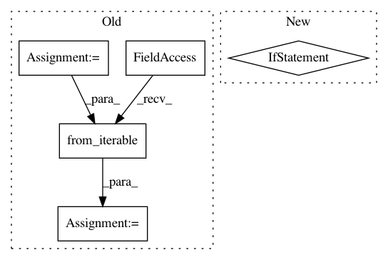

fe336309f86a2a3c55f5cad33ff085de74bb5875,skimage/transform/tests/test_radon_transform.py,,,#,332
Before Change
// this might be overkill:
// in order to allow tests of multiple shapes, the shape is packed in a tuple
// and using chain to get min or max of all shapes
shapes_radon_iradon_circle = ((61, 79), )
interpolations = ("nearest", "linear")
output_sizes = (None,
min(itertools.chain.from_iterable(shapes_radon_iradon_circle)),
max(itertools.chain.from_iterable(shapes_radon_iradon_circle)),
97)
@pytest.mark.parametrize("shape", shapes_radon_iradon_circle)
@pytest.mark.parametrize("interpolation", interpolations)
After Change
assert delta < 0.022 * error_factor
if __name__ == "__main__":
from numpy.testing import run_module_suite
run_module_suite()
In pattern: SUPERPATTERN
Frequency: 3
Non-data size: 5
Instances
Project Name: scikit-image/scikit-image
Commit Name: fe336309f86a2a3c55f5cad33ff085de74bb5875
Time: 2017-10-10
Author: nelzas@gmail.com
File Name: skimage/transform/tests/test_radon_transform.py
Class Name:
Method Name:
Project Name: pantsbuild/pants
Commit Name: b4eb76c08f9e613275f4b6bba4d32c8cc1224cdc
Time: 2021-03-23
Author: 14852634+Eric-Arellano@users.noreply.github.com
File Name: src/python/pants/backend/python/dependency_inference/rules.py
Class Name:
Method Name: infer_python_dependencies_via_imports
Project Name: pantsbuild/pants
Commit Name: ae1b4e61d29361dc7596be066bb25be06e53a56f
Time: 2020-02-28
Author: ericarellano@me.com
File Name: src/python/pants/rules/core/lint.py
Class Name:
Method Name: lint